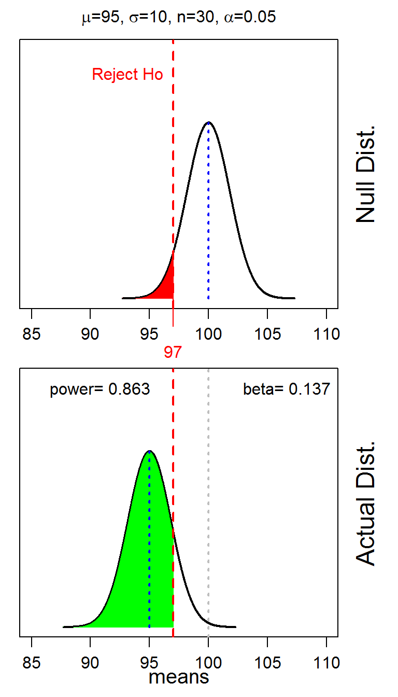

Understanding Power Relationships
 The probability of a type II error (β) and power cannot be computed because the true population mean (μa) is not known. However, β and power are affected by α, n, σ, and “how wrong” the null hypothesized value is. Simulations with known populations can be used to understand the relationships between β, power, and these other values. Because α and n are chosen by the statistician, decisions can be made that will affect the values of β and power (though we will never know the actual values of β and power).
The probability of a type II error (β) and power cannot be computed because the true population mean (μa) is not known. However, β and power are affected by α, n, σ, and “how wrong” the null hypothesized value is. Simulations with known populations can be used to understand the relationships between β, power, and these other values. Because α and n are chosen by the statistician, decisions can be made that will affect the values of β and power (though we will never know the actual values of β and power).
The powerSim() function (with no arguments) from NCStats provides an efficient method to perform these simulations. For example, powerSim() produced the plots shown below. The top plot is the “null distribution” or the sampling distribution of the sample means assuming that H0: μ=100 is true (and σ=10 and n=30). The rejection region that is defined by α=0.05 and assuming that HA: μ<100 (i.e., lower-tailed) is shown on the null distribution as the red shaded area bound by the vertical red line. Thus, any sample mean in this shaded area would result in a decision to reject H0.
The lower plot is the “actual distribtion” or the sampling distribution that would result if μ=95 (in this example) and σ=10 and n=30. The rejection region is projected onto this plot with the red vertical line. Because μ=95 is different than μ0=100, these graphs represent the situation where the H0 is incorrect. Rejecting H0 in this situation is a correct decision and the probability of making that decision is power. Power is shown on the actual distribution with the green shaded area and is equal to the value shown in the upper corner (left corner in this case). A type II error occurs if the H0 is not rejected. The probability of making this errors is shown by the off-red shaded area on the actual distribution and is equal to the value in the upper corner (right corner in this case).

In RStudio, these plots will have a gear icon in the upper-left corner that will open a dialog box that allows you to modify α n, σ, and the actual population mean. The plots will update automatically when any of these items are changed. Use these plots to answer the questions below.
- For the default values, show that the value of the sample mean that defines the rejection region is correct. [Hint: this is a reverse normal distribution calculation using the null distribution.]
- For the default values, show that the value for β is correct. [Hint: this is a forward normal distribution calculation using the actual distribution.]
- Determine the effect on β for each of the following situations. Provide graphical or numerical evidence for each of your answers.
- Increasing α.
- Increasing n.
- Increasing σ.
- Increasing “how wrong” the H0 is.
- Repeat the previous question but for the effect on power.
- What decisions can you, as a statistician, make to decrease β.
- What decisions can you, as a statistician, make to increase power.